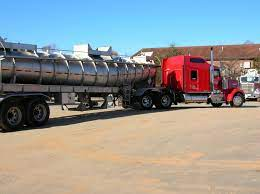
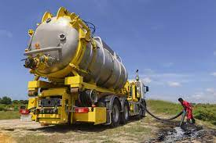
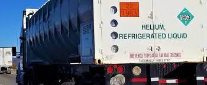

What regulations are in place for the transport of toxic waste?
Transporting toxic waste is a complex and potentially hazardous process. To ensure the safety of people and the environment, there are a variety of regulations in place to govern the transport of toxic waste. These regulations are typically enforced by government agencies such as the Environmental Protection Agency (EPA) in the United States or the European Chemicals Agency (ECHA) in Europe.
Some of the key regulations governing the transport of toxic waste include:
- Transporting permits and documentation: To transport toxic waste, a permit or authorization is typically required. This permit ensures that the waste is properly identified, packaged, labeled, and transported in accordance with regulations. Documentation is also required, including a waste manifest, which includes detailed information about the waste being transported, such as its origin, composition, and destination. 
- Packaging and labeling requirements: Toxic waste must be packaged and labeled appropriately to ensure safe transport. Packaging must be suitable for the type of waste being transported and meet specific performance standards. Labels and markings must indicate the hazardous nature of the waste and provide instructions for handling and emergency response.
- Transport routes and modes: The routes and modes of transport used to transport toxic waste are also regulated. Certain types of hazardous waste may be prohibited from transport on certain routes or via certain modes of transportation, such as air or water. Additionally, transport routes may need to be pre-approved by regulatory agencies to ensure that they are safe and do not pose a risk to people or the environment. 
- Driver training and safety requirements: Drivers of vehicles transporting toxic waste must undergo specialized training and meet certain safety requirements. This includes training on handling hazardous materials, safety procedures, emergency response, and proper use of personal protective equipment.
- Emergency response plans: Transporters of toxic waste must have emergency response plans in place in case of an accident or spill. These plans should outline procedures for containing spills and responding to emergencies, as well as providing contact information for emergency responders. 
- Recordkeeping and reporting: Transporters of toxic waste must maintain records of their activities, including the quantity and type of waste transported, the origin and destination of the waste, and any accidents or spills that occur during transport. These records must be maintained for a specified period of time and made available for inspection by regulatory agencies.
Overall, the regulations governing the transport of toxic waste are complex and extensive. These regulations are designed to ensure that toxic waste is transported safely and in accordance with the highest safety standards to protect the environment and public health.